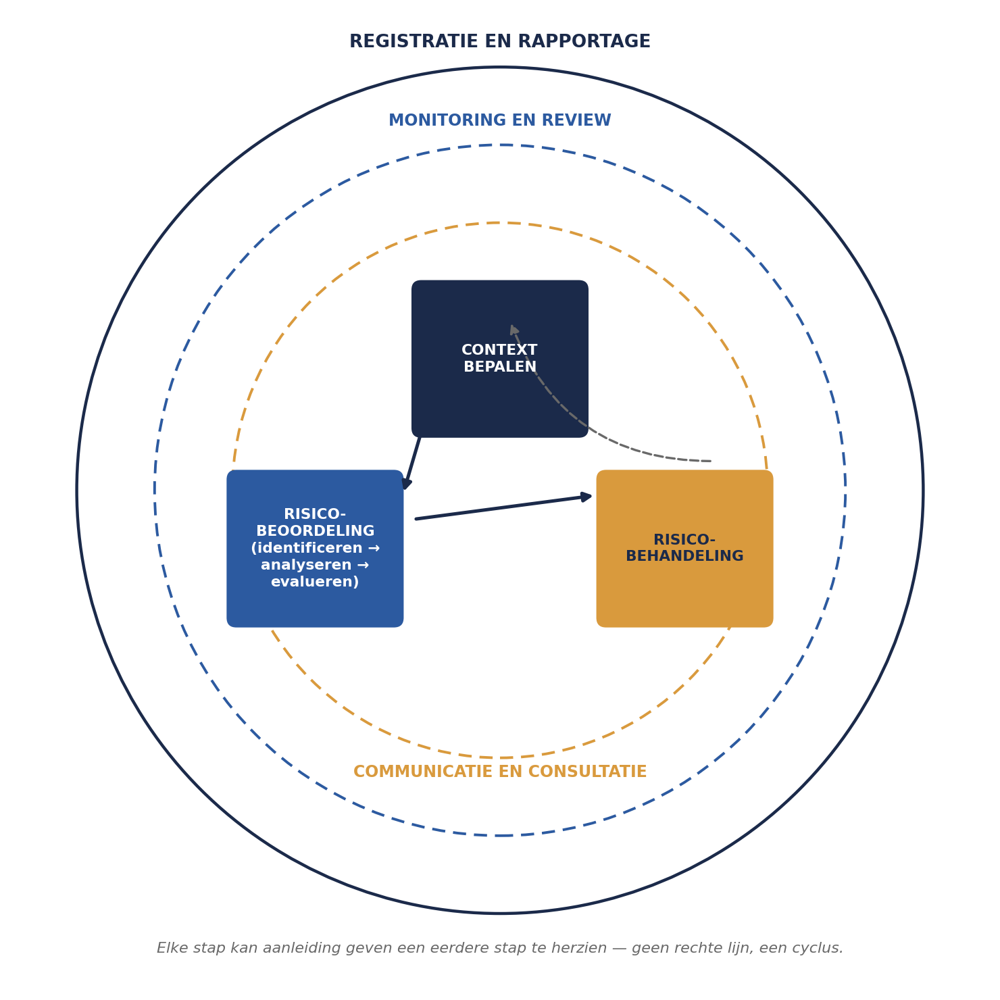
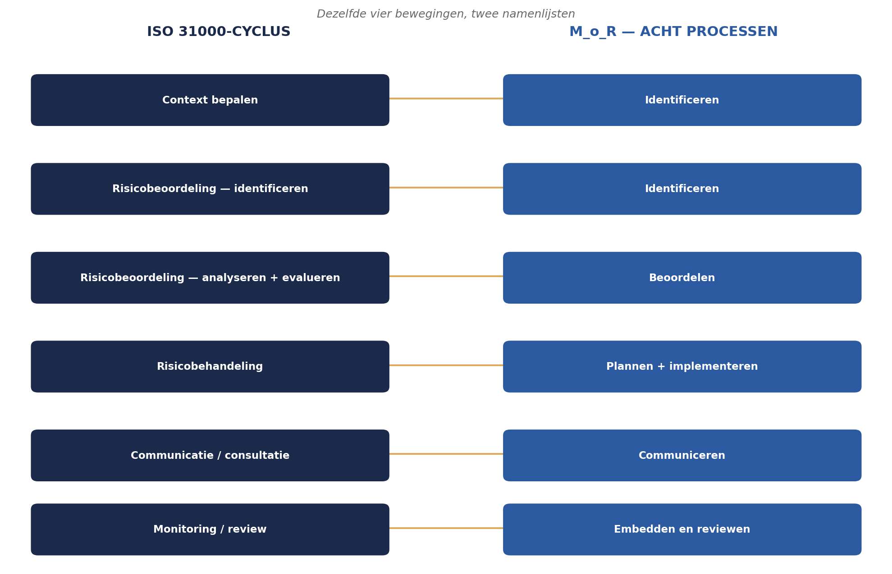
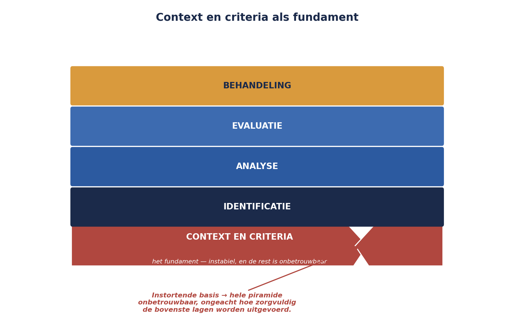

Deel 3 — Het proces, en de stap die iedereen overslaat
Niveau 1 — Fundament · Slidedeck (27 slides)
Slide 1 — Titel
Risicomanagement Deel 3 — Het proces, en de stap die iedereen overslaat
Niveau 1: Fundament
Slide 2 — Terugblik
ISO 31000 als grondtaal. M_o_R als operationeel raamwerk. COSO als strategisch vergelijkingskader.
Slide 3 — Sanne begint
Werksessie beleggen. Iedereen vragen naar risico’s. Scoren.
Precies wat er de vorige keer ook gebeurde.
Slide 4 — Eén vraag, geen antwoord
“Tegen welke doelstellingen ga je die risico’s afzetten? En welke schaal gebruik je, en waarom?”
Slide 5 — De cyclus
Context bepalen → Risicobeoordeling → Risicobehandeling
Geen rechte lijn. Een cyclus.
Slide 6 — Risicobeoordeling uitgesplitst
Identificeren → Analyseren → Evalueren
Slide 7 — Wat er doorlopend omheen zit
Communicatie en consultatie — de hele cyclus door Monitoring en review — de hele cyclus door Registratie en rapportage — als buitenste laag
Slide 8 — Figuur 3-1

Slide 9 — Opdracht 3.1 — 10 minuten
Teken de cyclus uit het hoofd. Welke twee activiteiten lopen doorlopend?
Slide 10 — M_o_R: vier fasen
Identificeren → Beoordelen → Plannen → Implementeren
Slide 11 — M_o_R: twee doorlopende activiteiten
Communiceren Embedden en reviewen
Zelfde beweging, andere naamgeving.
Slide 12 — Figuur 3-2

Slide 13 — Opdracht 3.2 — plenair
Koppel elk M_o_R-proces aan het overeenkomstige ISO 31000-onderdeel.
Slide 14 — De meest overgeslagen stap
Context bepalen levert geen lijst op. Geen score. Geen kleurtje.
Het voelt als voorwerk. Het is het fundament.
Slide 15 — Wat “impact 5” bij WGP 2.0 betekende
Niet: een vastgelegde grens.
Wel: de projectmanager vond het heel erg.
Slide 16 — Kernzin 2
Een score zonder vastgelegd criterium is geen meting, het is een indruk met een getal erop.
Slide 17 — Interne en externe context
| Intern | Extern |
|---|---|
| Structuur, cultuur, capaciteiten | Wetgeving, toezicht, markt |
| Eén kenner premieberekening | DNB/AFM |
| Terughoudendheid bij slecht nieuws | Wtp-transitie |
Slide 18 — Opdracht 3.3 — groepjes van drie
Welke drie vervolgvragen had Sanne aan de stuurgroep moeten stellen?
Slide 19 — Criteria: de kansschaal
| Score | Betekenis |
|---|---|
| 1 | Nog niet eerder voorgekomen |
| 3 | Al één keer opgetreden |
| 5 | Nu al concrete signalen |
Slide 20 — Criteria: de impactschaal
Gekoppeld aan echte doelstellingen — tijd, geld, kwaliteit/reputatie.
Niet: “laag/midden/hoog” zonder toelichting.
Slide 21 — Voorbeeld
| Tijd | Geld | Kwaliteit | |
|---|---|---|---|
| Hoog | > 3 mnd vertraging | > €500.000 | Meldingsplichtig DNB/AFM |
Slide 22 — Figuur 3-3

Slide 23 — Opdracht 3.4 — individueel, 25 minuten
Bouw een impactschaal, drie niveaus, minstens twee dimensies.
Geen bijvoeglijk naamwoord zonder getal erachter.
Slide 24 — Risicobereidheid, kort
Vóór de cijfers: een uitspraak in woorden.
“Wij accepteren vertraging tot zes weken… wij accepteren geen enkel risico dat leidt tot onjuiste pensioenuitkeringen.”
(volledig uitgewerkt in deel 12)
Slide 25 — Sanne’s document — zeven onderdelen
Doel en scope · Interne context · Externe context Kansschaal · Impactschaal · Risicobereidheid Vaststelling en herzieningsmoment
Slide 26 — Niet eenmalig
Herzien bij: nieuwe wet, gewijzigde scope, fusie.
Een niet-herzien document sluit steeds minder aan bij de werkelijkheid.
Slide 27 — Voor deel 4
Huiswerk: opdracht 3.5 — volledig context- en criteriadocument
Deel 4: identificatietechnieken — met dit document als basis, en de risicozin uit deel 1 in de praktijk.